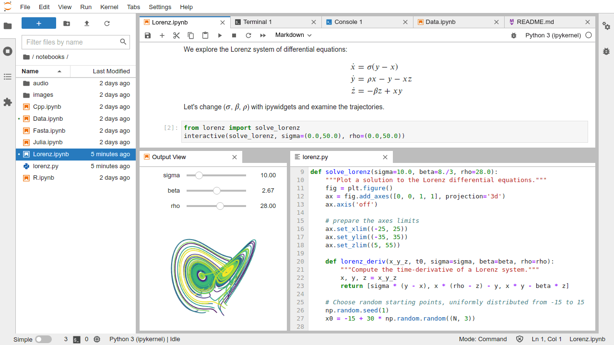

Introduction to Jupyter Lab
Contents
Introduction to Jupyter Lab¶
What is Jupyter Lab?¶
Jupyter Lab is an integrated development environment (IDE) commonly used for interactive coding with languages such as Python, R, and Julia. In fact, Jupyter is an acronym for Julia-Python-R. You can also you Jupyter Lab with other scripting languages such as Matlab or Octave.
What is an IDE? An IDE is simply a text editor with some features that make coding easier and more efficient such as
Syntax highlighting
File organization/navigation
Code execution
Integrated terminal
Debugger
Jupyter Lab is the next generation of Jupyter Notebook (the older version). Besides full support for Jupyter Notebook, Jupyter Lab offers a better GUI and many more features/enhancements that boost your productivity.
Other IDEs¶
Jupyter Lab is not the only IDE for Python, but in my opinion, it is the best for data-related tasks. Other popular IDEs include
Pycharm
Spyder
Visual Studio Code
Zeppelin
Installation¶
You don’t need to install Jupyter Lab because it comes with Anaconda’s standard installation, which you already installed in the previous chapter.
Start Jupyter Lab¶
Now you can launch Jupyter lab and start coding. First, go inside the root folder of your project, right-click on a blank space, and choose Git Bash Here.
A Git Bash terminal opens (this is why we installed Git in the previous chapter). Type the following command and hit Enter
jupyter lab
Jupyter Lab will be launched via a new tab on your default browser. For a better experience, I recommend you set a modern browser such as Chrome or Microsoft Edge as your default browser.
The picture below shows an example of using Jupyter Lab for a Python project.

Create your first notebook¶
Your project can contain only a single notebook or a collection of notebooks, depending on the complexity of your analysis.
Each notebook is a piece of analysis that contains code and explanatory text. As you can see in the left panel in the picture above, there are 6 notebooks (files with extensions .ipynb)
Now, right-click the big rectangle button with a plus sign on the left panel. A launcher panel will appear on the right listing several options that allow you to create a new notebook, text file, or terminal.
To create a new notebook, choose Python 3 (ipykernel) as shown in the picture below.
Right-click on the file name and rename it to first_analysis.ipynb
Components of a notebook¶
A notebook consists of editable cells (meaning that you can write into those cells).
The reason for breaking our code into multiple cells is for better management: easier to maintain and debug.
There are two types of cells in a notebook
Code cells: used for writing Python code, thus what you write must conform to Python syntax. If not, you will get an error when the cell is executed.
Markdown cells: used for writing explanatory text (like what you are reading now). You can write whatever you want, there will be no error.
Markdown (will be discussed in the next chapter) specifies a simple set of rules that allow you to format your text similar to what you do with Microsoft Word (but much more limited), for example
Headings
Bullet points
Bold text
Italic text
code fencesMath formula \(E = mc^2\)
By default, a newly created cell will be a code cell.
To convert a cell to a Markdown cell, use
Esc + M.To convert it back to a Code cell, use
Esc + Y.
Run a cell¶
When you finish writing, you need to run or execute it to tell Jupyter Lab to process and render what you write.
For a code cell: Jupyter Lab calls Python to evaluate and run your code. You might get an error if you did something wrong.
For a Markdown cell: Python just renders the text according to Markdown’s rules. There will be no error.
There are three ways to run a cell, and they are the same for both code cells and Markdown cells
Ctrl + Enter: run the current cell and stay at that cellShift + Enter: run the current cell and move to the next cellAlt + Enter: run the current cell, then insert a new cell below and move to that cell
Example 1: run a code cell
print("Hello. How are you?")
print(2 + 3)
Hello. How are you?
5
Example 2: run a Markdown cell with the following content
- item 1
- **item 3**
- *item 4*
- $y = \frac{1}{2}\int e^{2x}dx$
Here is what you will see
item 1
item 3
item 4
\(y = \frac{1}{2}\int e^{2x}dx\)
Command vs. editing mode¶
There are two modes when working with a notebook: editing and command.
Editing mode: you are in the editing mode when you are typing something inside a cell, and what you do is mostly just writing.
Command mode: you are in the command mode when you perform actions on the whole cell (and potentially on multiple cells) such as
Delete, copy, cut a cell
Paste a cell below another cell
Add a cell above or below another cell
To activate the command mode, you hit Esc and then press another key to perform an action you wish. For example, Esc + A will add a new cell above the current cell (see the next section for a complete list of actions)
To activate the editing mode on a cell, you simply double-click on that cell and start typing.
Shortcuts in command mode¶
The following are common keyboard shortcuts to work on a notebook in the command mode. There are equivalent GUI options that allow you to accomplish the same things with your mouse. However, I highly recommend using shortcuts because they will allow you to code a lot faster.
Add a cell Above the current cell:
Esc + AAdd a cell Below the current cell:
Esc + BDelete the current cell:
Esc + DDCopy the current cell:
Esc + CCut the current cell:
Esc + XPaste a cell in the clipboard below the current cell:
Esc + VUndo last action:
Esc + ZConvert a cell to a Markdown cell:
Esc + MConvert a cell to a Code cell:
Esc + Y
Practice¶
The only way to master any skill is through practice. Thus, here are some exercises to help you internalize what you have learned.
They are very simple and won’t take much time. There might be some activities that I did not cover in the main text, but you can figure out how to accomplish them easily.
Ex 1¶
Create a folder named
test/on your computerLaunch Jupyter Lab inside
test/Create three sub-folders and rename them
data/,nb/, and/docs(Hint: use the left panel)Go inside
data/and upload a random file (Hint: use the left panel)Go inside
nb/, create a new notebook and rename it toanalysis.ipynbGo inside
docs/, create a new text file and rename it tomanual.txt
Ex 2¶
Open analysis.ipynb in Ex 1 and do the following
Add a Markdown cell with the content
Monthly analysisAdd a Code cell with the following content and run it. What output do you see?
store_1_sales = 5000 store_2_sales = 7000 total_sales = store_1_sales + store_2_sales print(f"Total sales: {total_sales}")
Add a Markdown cell and write some random text
Copy the above Markdown cell and paste it right below the first cell
Delete the cell you have just pasted
Undo the deletion
Convert the code cell in step 2 into a Markdown cell and execute it. What do you see?
Convert it back to a code cell and execute it. What do you see?
Notice on the top-right corner, do you see something like
Python 3 (ipykernel). If yes, it means you are in an active session and Python is still running under the hood. No more action is needed for this task.Now shut down the kernel for this notebook (but do not close it). Do you see something like
No Kernel? If yes, it means the kernel is dead and Python is not running. (Hint: do you see a button with a square inside a circle on the left side of Jupyter Lab?)Add a code cell at the end of the notebook and run the following statement
print("Kernel is dead"). What do you see?Now reactivate the kernel. Do you see a green dot on the left of the file name and the top-right corner is back to
Python 3 (ipykernel)? If yes, it means the kernel is up and running. (Hint:Menu > Kernel > Restart Kernel)Now re-run the code cell in step 9. Does it work now?
Scroll to the end of the notebook, add 10 blank code cells. How to make it fast? (Hint:
Escthen hit (fast)Bten times)Now delete all the blank cells you have just added. How to make this fast? (Hint: click on the first cell, hold the
Shiftkey, then click the last blank cell while still holdingShift. You will see all the cells are highlighted. Now hitEsc + DD)Undo the deletion